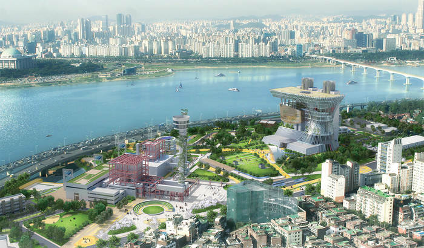
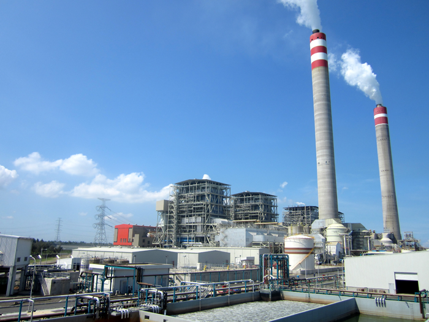

회사 개요

중부발전서비스 주식회사는
회사를 운영하시는 사장님과 전국 8개 사업소 600여명의 임직원들이 사업성공의 열매를 수확할 수 있도록 최선의 노력을 다하고 있으며 아울러 전국 8개 중부발전본부의 보안과 인적서비스 그리고 쾌적한 환경조성을 담당하여 한국중부발전주식회사의 사업성장을 위해 함께하고 있습니다.
통합컨설팅
고객관리체계,
고객만족 실현
지역민의 삶의 질
가치창조
수익모델 다양화
꾸준한 개발
중부지역에 위치
편리한 교통입지
시행 사업
냉·난방기 오버홀세척
- 사무동 및 산업현장 각종 에어컨의 분해 후 살균소독 방식의 청소 서비스
- 발전소 제어실의 항온항습기 청소 및 방제
소독(방역)
- 건물 내. 외부 소독&방역 관리
- 공용부분. 사무공간. 화장실등 전염병의 유행을 방지하고 각종 해충의 진입 및 번식차단
환경관리
- 울타리주변 잡풀(칡넝쿨 등) 제거, 잔디밭 잡초제거
- 고농축 액상천일염(잡초제거소금)을 이용한 친환경 바이오 작업
태양광패널 크리닝
- 태양광패널 유리표면 세척으로 발전수익 증대
- 먼지, 낙엽, 조류분비물 등 제거로 光전지 빛 흡수율 증가효과
건물외벽 크리닝
- 외벽 및 유리창 크리닝
- 스카이를 이용하여 초고압 워터분사기기를 사용한 외벽 및 유리창 세척
대리석 연마, 광택크리닝
- 전용장비를 사용하여 대리석 본연의 색 복원 및 유지관리
- 로비. 복도 등 공용부분 광택
경영방침
안전 최우선
노사 화합
지속성장

모든 임직원은 안전한 작업환경 조성과 생명존중이라는 핵심가치를 실현하여 궁극적인 목표인 「산업재해 발생율 Zero」를 달성할 수 있도록 안전보건 경영방침 준수에 최선의 노력을 다한다.
안전보건 경영방침
- <안전보건활동>은 모든 경영의사 결정과 실행과정에 있어 최우선으로 한다.
- 전 임직원과 근로자는안전보건 관련 법규 및 제반 규정을 준수하며, 사진과 가족, 나아가 회사를 위해 산업재해 예방에 적극적으로 앞장선다.
- 불안전한 행동을 최소화 하고, 불안전한 상태를 제거하여 인재(人災)로 인한 안전사고를 배재한다.
- 안전한 일터와 쾌적한 근무환경 조성을 위해 현장의 유해 · 위험요소를 지속해서 찾아내고 개선한다.
- 우리는 모두 소통하고, 배려하며, 참여하는 자율적인 안전문화 의식을 위해 최선의 노력을 다한다.